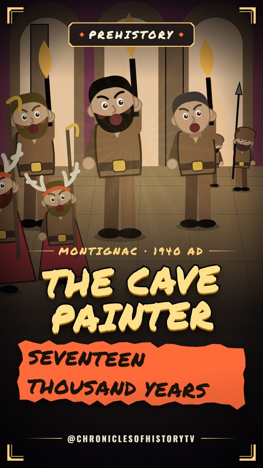
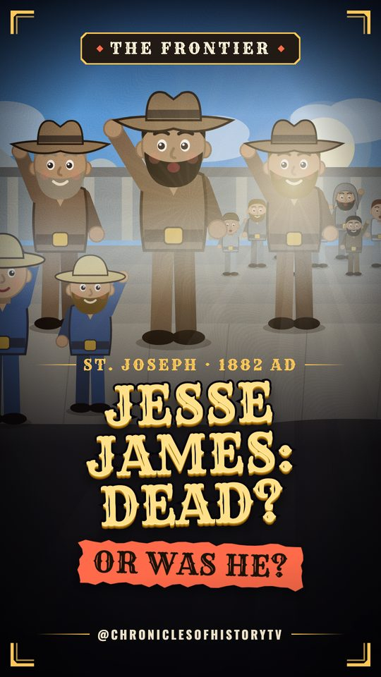
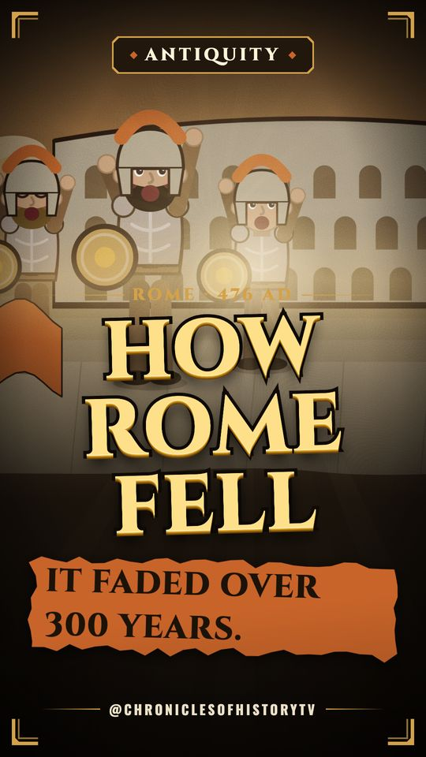
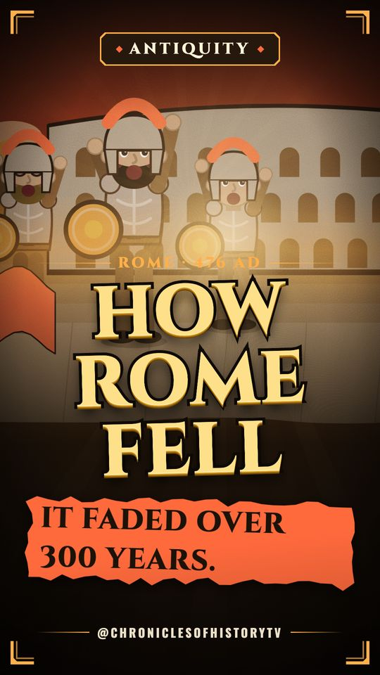
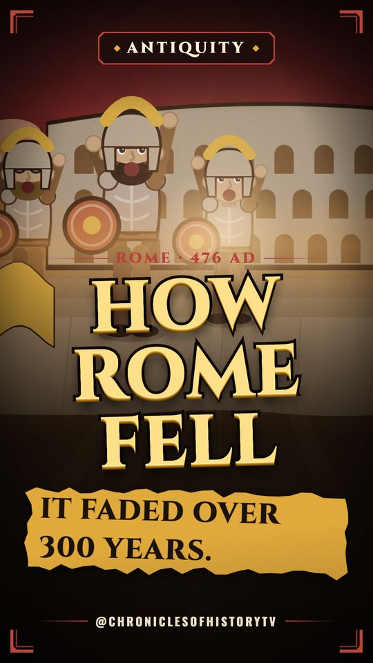
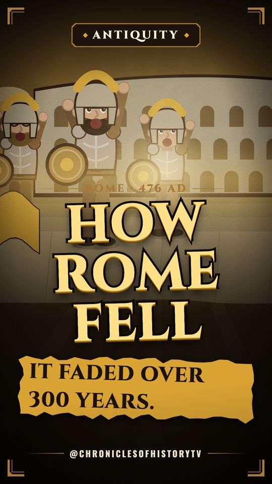
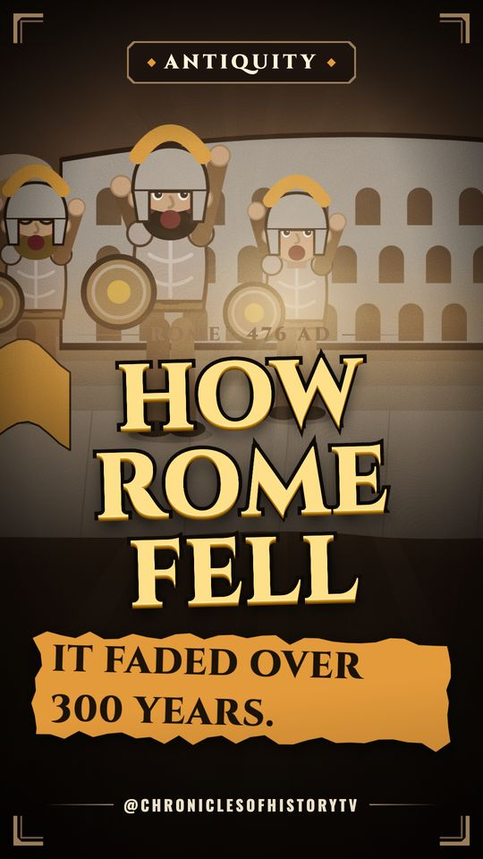

before 3000 BC
Prehistory
Cave painters, mammoth hunters and the first fires.
Short, narrated, hand-drawn stories from every age of the world.
A new true story every day, in just over a minute.
Chapter I · The stories
Each story is a series of its own: a day in the life, a turning point, an unsolved mystery, a journey, a life in dates.




Scroll ↓ the stories unfold
Chapter II · The workshop
Chapter III · Eleven eras
Each story is drawn in the look of its own age: its typefaces, frames and buildings, with every anachronism removed.
Cave painters, mammoth hunters and the first fires.
Pharaohs, legions and philosophers: Egypt, Greece and Rome.
Castles, crusades, Vikings and the Black Death.
Samurai, dynasties and the roads of the East.
Painters, printers and the birth of modern science.
Explorers, pirates and maps that led to treasure.
Crowns, revolutions and the court of Versailles.
Steam, rails, telegraphs and a world speeding up.
Outlaws, gold rushes and the Wild West.
Trenches, turning points and the weight of choices.
Rockets, satellites and the road to the Moon.
Chapter IV · How it’s made
One person, a pipeline of software and a strict editor: no story leaves without passing every gate.
A format and a topic, balanced by what viewers really watch to the end.
An AI-drafted script that must pass strict checks: story first, people in every picture, 150–190 words.
A second pass verifies dates, names, figures and quotes and rewrites whatever is wrong.
A synthetic voice reads the script and the subtitles follow every word.
Remotion paints each scene with a cast of historical characters, animals and buildings of the right era.
A technical gate checks length, format and sound before the story is scheduled.
Chapter V · The maps
Journeys are inked on parchment over real coastlines: a dashed trail walks from place to place, X marks the spot and the compass keeps its watch.







Chapter VI · Seven colour styles
A palette of parchment, leather, brick and gold leaf, dressed in seven moods that rotate from video to video. Pick one and watch the cover change.
Gilded — gold leaf on dark leather, each era with its own accents.
Chapter VII · Questions
The scripts are drafted with AI language models and then checked by an automated fact-check pass; the owner picks the formats. The narration is a synthetic voice and every picture is drawn by code. Nothing is filmed and no archive footage is used.
Facts come first: every date, name and figure must be real and well documented, and where historians disagree the video says so. Mistakes can still happen: if you spot one, tell us and we will correct or remove the video.
Every story runs between 62 and 90 seconds: long enough for a beginning, a turn and an ending, short enough to watch in one go.
They are drawn from real coastlines (Natural Earth, public domain) in the style of an old treasure map, with the real position of every place in the story.
No. This site has no cookies, no analytics and loads nothing from other companies. Read the Privacy Policy.
Join the chronicle. A new story every day, on both channels.